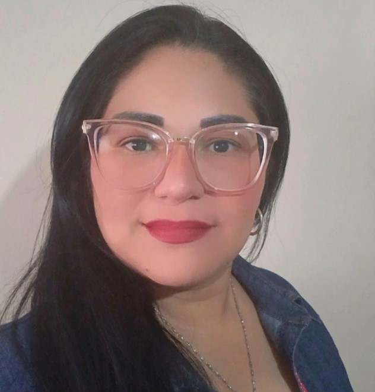

Me gradué de Lcda en Comunicación Social en el 2009, mensión audiovisual. Hice mis pasantias en un canal de televisión reginal en el Zulia. Trabajé con ellos un tiempo más despúes de mi graduación en la parte de producción. Posteriormente en compañía de un colega hicimos un programa radial llamado Conexión Nocturna, su duración eran de dos horas. El programa estuvo al aire casi dos años.
Luego de ese tiempo me mudé a otro estado, donde emprendí un nuevo rumbo y con ello una nueva experiencia laboral en otro campo, muy nuevo para mi donde me desempeñé como Asistente Administrativa en una Agro Ferreteria.
Este año en curso decidí aprender y adentrarme en el mundo de la programación, siento este campo de mucha oferta laboral. Actualmente estoy en una cursada donde me recibiré como Diseño y Programación Web.
Soy mamá de dos niños; la mayor de 12 años y en menor de 5 años. Para mi ha sido un desafío muy grande poder combinar mi rutina como mamá, atender mi hogar y dedicarle tiempo al aprendizaje del curso. Muchas veces ambos niños se enferman; por lo cual requieren mucho más mi atención y cuidados.
Sé que cumpliré mis objetivos y lograré desempeñarme en este mundo de las tecnologías. Por lo pronto debo hacer espacios más amplios para concentrarme y crear nuevos proyectos; eso me permitirá un mayor desarrollo.